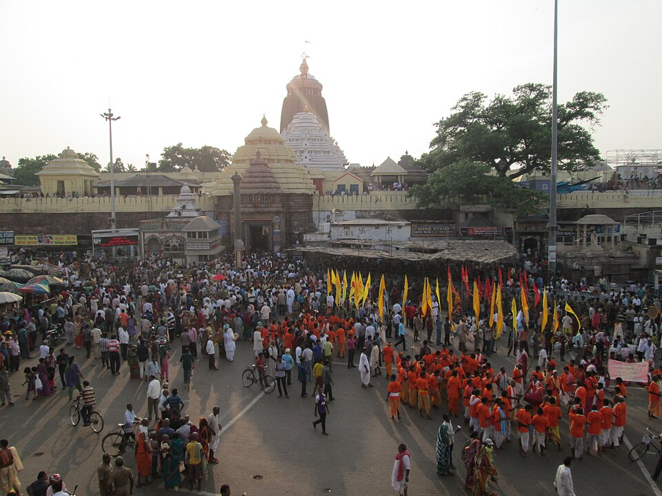

Puri's historical origins are deeply intertwined with the ancient geo-political realms of Kalinga, Odra, and Utkala. Early epigraphic records from the 7th–8th century under the Shailodbhava and Bhauma-Kara dynasties document an ancient wooden shrine. Under the Eastern Ganga dynasty (1078–1434 CE), Emperor Anantavarman Chodaganga Deva commissioned the monumental 65-meter Jagannath Deula, completed by Anangabhima Deva III, who consecrated the entire empire to Jagannath (Purushottama-Samrajya).
The Suryavamsi Gajapatis (1434–1541 CE) solidified the ruler's role as Adya Sevaka (First Servant), institutionalizing the Chhera Pahara gold-broom sweeping ceremony. During 16th–18th century invasions, servitors covertly sheltered the deities in remote Chilika islands and Marada ('Chhada Deula'). The Marathas (1751–1803) established endowments and regularized the Jagannath Sadak pilgrim route, leading to British administration and the statutory Shri Jagannath Temple Act of 1955.

Historical Eras
Somavamsi / Early Kalinga → Eastern Ganga Dynasty (1078–1434) → Suryavamsi Gajapati (1434–1541) → Sultanate Invasions → Maratha Era (1751–1803) → British Period → Modern State
Key Figures
Anantavarman Chodaganga Deva, Anangabhima Deva III, Kapilendra Deva, Gajapati Prataparudra Deva, Shri Chaitanya Mahaprabhu, Kavi Jayadeva, Atibadi Jagannatha Das
Legacy
The Kalinga architectural canon, Gajapati Adya Sevaka statecraft, Madala Panji palm-leaf chronicles, Odia 6th Classical Language status (2014), and unbroken Chhatisa Nijoga hereditary guilds